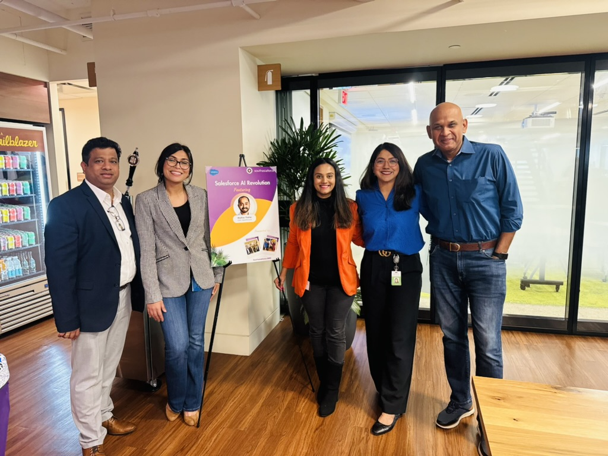
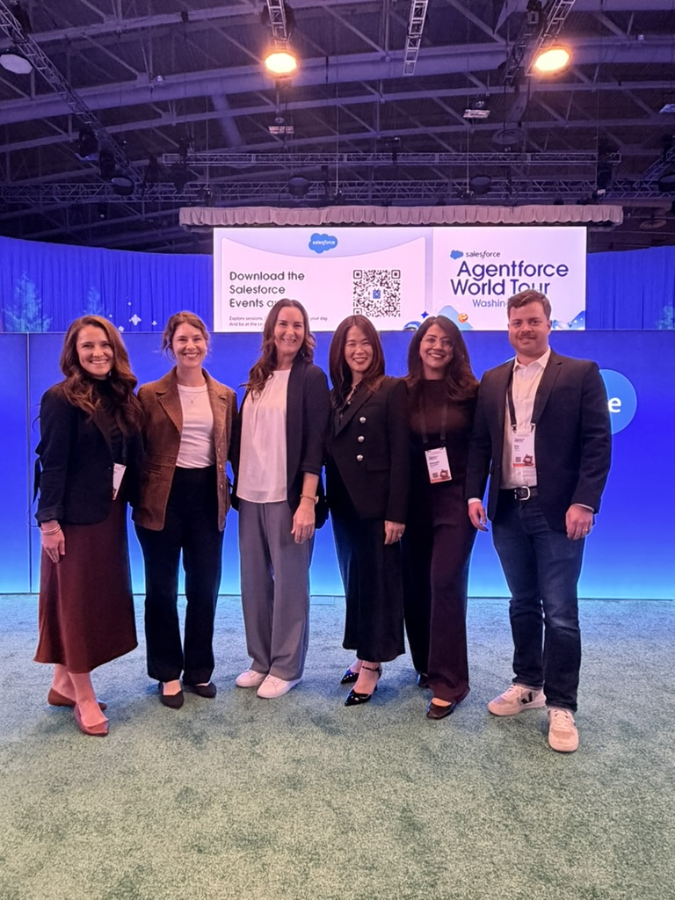
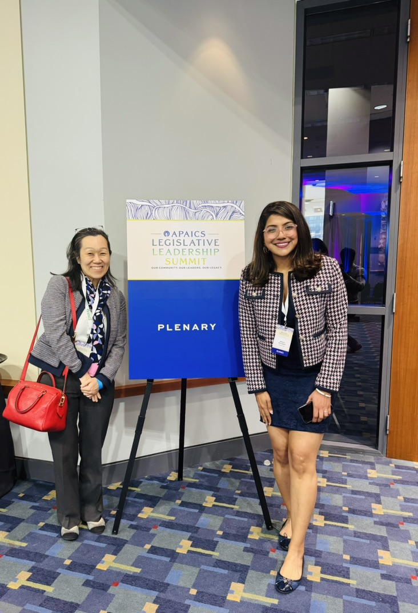
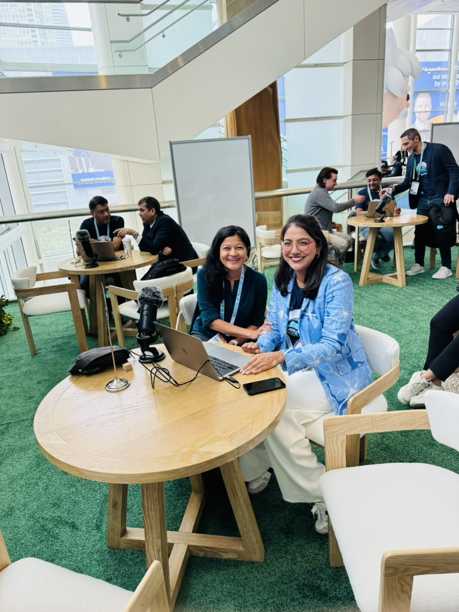
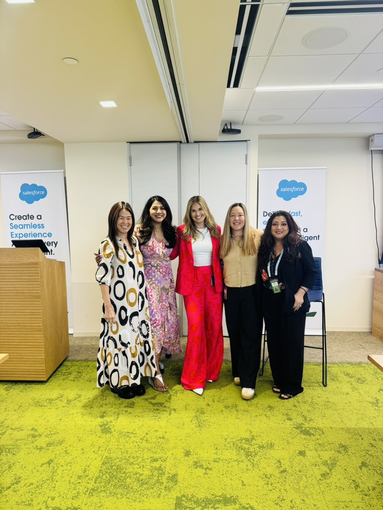
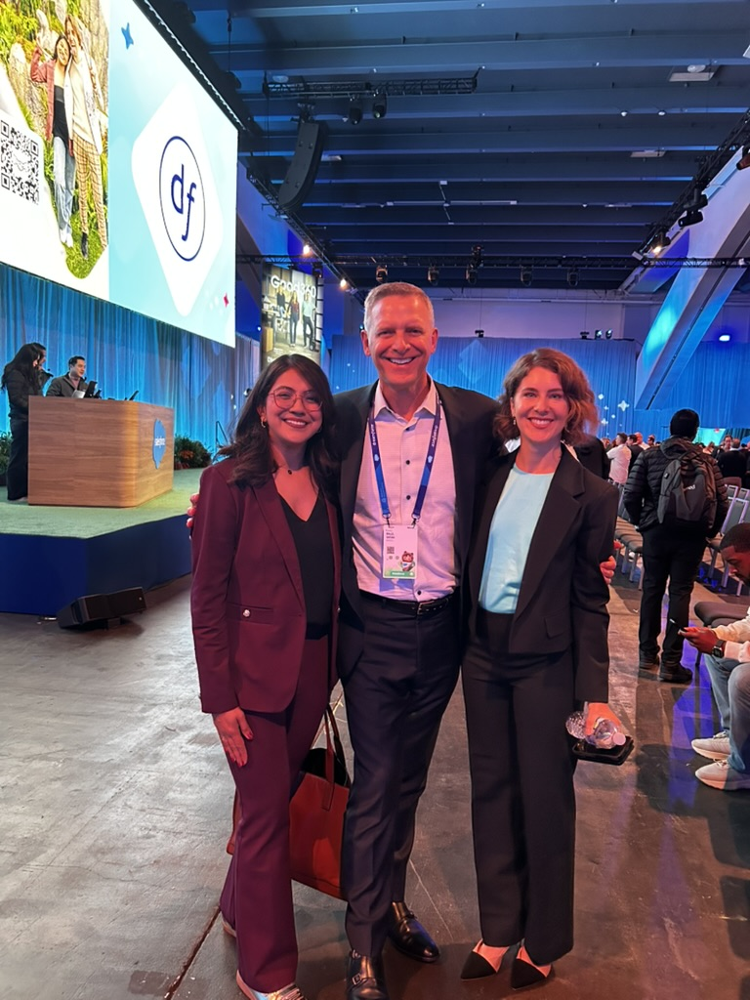
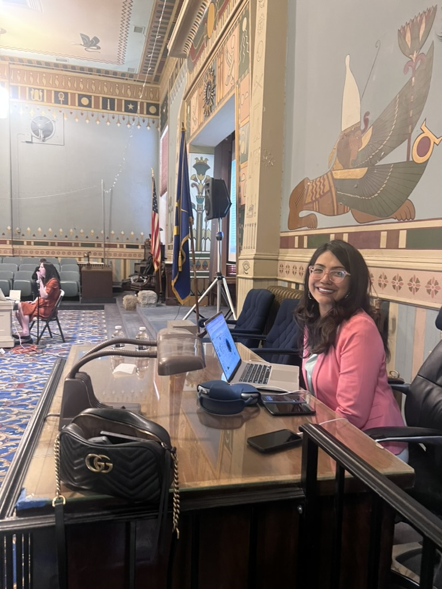
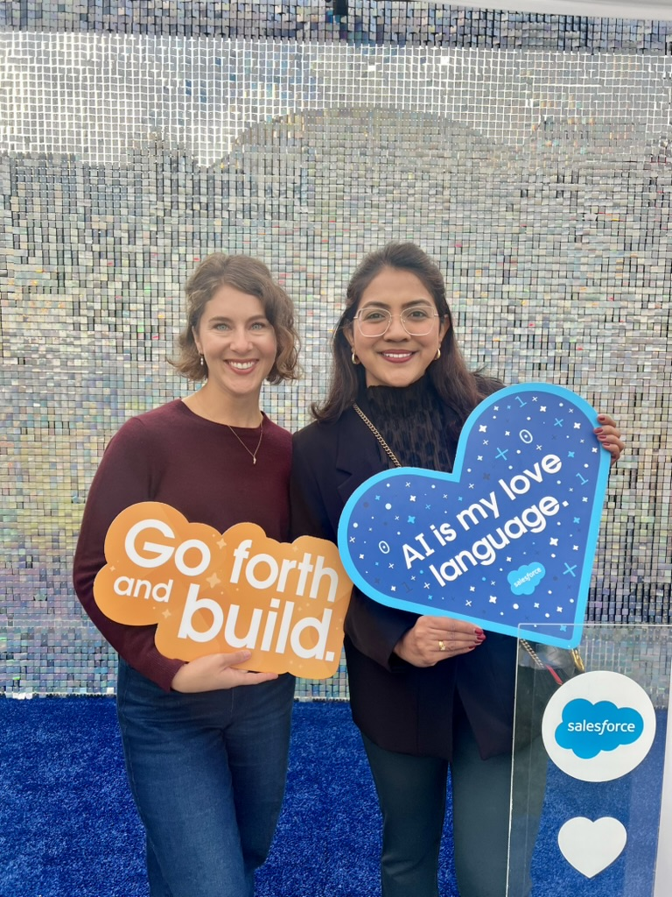

Ashburn, VA · Global Public Sector
Mahathi Devulapalli
I build AI the public sector can trust — and the community that carries it forward.
Principal Sales Engineer · Agentforce & Salesforce AI SME · Storyteller
Ashburn, VA · Global Public Sector
I build AI the public sector can trust — and the community that carries it forward.
Principal Sales Engineer · Agentforce & Salesforce AI SME · Storyteller
scroll to explore
The organizations doing the most important work often get handed the most complicated tools. Government agencies, nonprofits, the public sector. I think that's backwards. When the mission is already hard, the technology should be the easy part.
That's the work I chose. I'm a Principal Sales Engineer in Salesforce's Global Public Sector org and an SME in Agentforce & Salesforce AI, and most of my job is earning trust, not selling software. I take AI architecture that's genuinely hard and make it clear enough that a room full of people can see exactly how it changes their day. That moment when they get it is the whole point.
I don't do any of it alone. I mentor the engineers coming up behind me, help nonprofits punch above their weight, and stay close to my South Asian community. Technology only really matters if it lifts the people doing the hardest work.
Think of it as a working library. Agents and tools I've shipped for public-sector customers, the productivity kit I built to scale my team, and the things I make just because I love making them. Pick any spine to open it. Customer names stay off the cover, since what the work does is the part that matters.
The person public-sector and mission-driven teams call when AI has to actually work. I'm there from the first whiteboard sketch all the way to a production rollout they can stand behind.
What this taught meThe hardest problems are rarely technical. They're trust, adoption, and change. The demo is the easy part. Getting a room to believe a system will hold up under real stakes is the actual job.
Salesforce certifications, verified on my Trailblazer profile.
Co-founding WISE GPS, mentoring through the Presales Collective, it all comes back to one thing. Talent rises a lot faster when someone reaches back for you. So I coach engineers and aspiring SEs on finding their voice in the room and their footing in the platform.
Building community is the throughline of my life outside the day job, and it's how a lot of people come to know my voice. I get invited onto fireside chats and podcasts to talk about AI, the public sector, and finding your footing in tech. I've never been one to turn down a good conversation.
I help mission-driven orgs punch above their weight with the right technology and a little strategic scrappiness. The people doing the hardest work deserve the best tools, not the leftovers.
Books by day, Netflix by night, strong opinions on plot pacing always. If it's a good story or a good outfit, I'm in.
A Salesforce Pro Bono Fellowship with the largest clean-tech startup network across India and the Global South, backing more than a thousand startups. I helped design a value-added data platform to connect founders with investors and build community, and ran the discovery behind it: stakeholder interview guides, angel-investor conversations, syndicate research, and vision and values workshops.
Solution engineering for a nonprofit that gets donated goods to the people who need them. The work became something of a reference: a Futureforce scholar reached out citing this engagement as the model for their own AI platform connecting people in need, volunteers, and nonprofits.
I take live calls to lend my sight to blind and low-vision callers, including one I got to help in Hindi with someone in India. Small moments, but they stay with you.
A hands-on spring-cleaning day with the DMV team for a crisis-intervention and domestic-violence shelter, getting the facility ready for the families who count on it.








Curious about public-sector AI, Agentforce, mentorship, or community building? Or honestly just have a good book recommendation? I'm always up for the conversation.
Come for the AI, stay for the yapping.